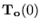
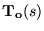
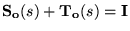
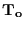
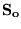

|
You are here : Control
System Design - Index | Book Contents |
Chapter 26
26. MIMO Controller Parameterisations
Preview
An idealized requirement in MIMO control system design is that of
decoupling. As discussed in section §20.4, decoupling can take various
forms ranging from static (where decoupling is only demanded for
constant reference signals) up to full dynamic decoupling (where
decoupling is demanded at all frequencies). Clearly full dynamic
decoupling is a stringent demand. Thus, in practice, it is more usual to
seek dynamic decoupling over some desired bandwidth. If a plant is
dynamically decoupled, then changes in the set-point of one process
variable leads to a response in that process variable but all other
process variables remain constant. The advantages of such a design are
intuitively clear; i.e. a temperature may be required to be changed but
it may be undesirable for other variables (e.g. pressure) to suffer any
associated transient.
This chapter describes the design procedures necessary to achieve
dynamic decoupling. In particular, we discuss
- dynamic decoupling for stable minimum phase systems
- dynamic decoupling for stable non-minimum phase systems
- dynamic decoupling for open loop unstable systems.
As might be expected, full dynamic decoupling is a strong requirement
and is generally not cost free. We will thus also quantify the
costs of decoupling using frequency domain procedures. These allow a
designer to assess a priori whether the cost associated with
decoupling is acceptable in a given application.
Of course, some form of decoupling is a very common requirement. For
example, static decoupling is almost always called for. The question
then becomes, over what bandwidth will decoupling (approximately) hold.
All forms of decoupling come at a cost, and this can be evaluated using
the techniques presented here. It will turn out that the additional cost
of decoupling is a function of open loop poles and zeros in the right
half plane. Thus, if one is interested in restricting decoupling to some
bandwidth then by restricting attention to those open loop poles and
zeros that fall within this bandwidth one can get a feel for the cost of
decoupling over that bandwidth. In this sense, the results presented in
this chapter are applicable to almost all MIMO design problems since
some form of decoupling over a limited bandwidth (usually around dc) is
almost always required.
We will also examine the impact of actuator saturation on decoupling.
In the case of static decoupling, it is necessary to avoid integrator
wind-up. This can be achieved using methods that are analogous to the
SISO case treated in Chapter11. In the case of full dynamic decoupling,
special precautions are necessary to maintain decoupling in the face of
actuator limits. We show that this is indeed possible by appropriate use
of MIMO anti wind-up mechanisms.
Summary
- Recall that key closed loop specifications shared by SISO and MIMO
design include
- continued compensation of disturbances
- continued compensation of model uncertainty
- stabilization of open-loop unstable systems
whilst not
- becoming too sensitive to measurement noise
- generating excessive control signals
and accepting inherent limitations due to
- unstable zeros
- unstable poles
- modeling error
- frequency and time domain integral constraints
- Generally, MIMO systems also exhibit additional complexities due
to
- directionality (several inputs acting on one output)
- dispersion (one input acting on several outputs)
- and the resulting phenomenon of coupling
- Designing a controller for closed loop compensation of this MIMO
coupling phenomenon is called decoupling.
- Recall (Chapter 20) that there are different degrees of decoupling,
including
- static (i.e.,

is diagonal)
- triangular (i.e.,

is triangular)
- dynamic (i.e.,
is diagonal)
- Due to the fundamental law of
,
if

exhibits any of these decoupling properties, so does
.
- The severity and type of trade-offs associated with decoupling
depend on
- whether the system is minimum phase
- the directionality and cardinality of non-minimum phase zeros
- unstable poles.
- If all of a systems unstable zeros are canonical (their
directionality affects one output only), then their adverse effect
is not spread to other channels by decoupling provided that the
direction of decoupling is congruent with the direction of the
unstable zeros.
- The price for dynamically decoupling a system with non-canonical
non-minimum phase zeros of simple multiplicity is that
- the effect of the non-minimum phase zeros is potentially
spread across several loops
- therefore, although the loops are decoupled, each of the
affected loops needs to observe the bandwidth and sensitivity
limitations imposed by the unstable zero dynamics.
- If one accepts the less stringent triangular decoupling, the
effect of dispersing limitations due to non-minimum phase zeros can
be minimized.
- Depending on the case, a higher cardinality of non-minimum phase
zeros can either enforce or mitigate the adverse effects.
- If a system is also open-loop unstable, there may not be any way
at all for achieving full dynamic decoupling by a one d.o.f.
controller although it is always possible by a two d.o.f.
architecture for reference signal changes.
- If a system is essentially linear but exhibits actuator
nonlinearities such as input or slew rate saturations, then the
controller design must reflect this appropriately.
- Otherwise, the MIMO generalization of the SISO wind-up phenomenon
may occur.
- MIMO wind-up manifests itself in two aspects of performance
degradation:
- transients due to growing controller states
- transients due to the nonlinearity impacting on directionality
- The first of these two phenomenon
- is in analogy to the SISO case
- is due to the saturated control signal not being able to
annihilate the control errors sufficiently fast compared to the
controller dynamics; therefore the control states continue to
grow in response to the non-decreasing control. These wound
up states produce the transients when the loop emerges from
saturation.
- can be compensated by a direct generalization of the SISO anti
wind-up implementation.
- The second phenomenon
- is specific to MIMO systems
- is due to uncompensated interactions arising from the input
vector loosing its original design direction.
- In analogy to the SISO case, there can be regions in state space,
from which an open loop unstable MIMO system with input saturation
cannot be stabilized by any control.
- More severely than in the SISO case, MIMO systems are difficult to
control in the presence of input saturation, even if the linear loop
is stable and the controller is implemented with anti wind-up. This
is due to saturation changing the directionality of the input
vector.
- This problem of preserving decoupling in the presence of input
saturation can be addressed by anti wind-up schemes that scale the
control error rather than the control signal.
|